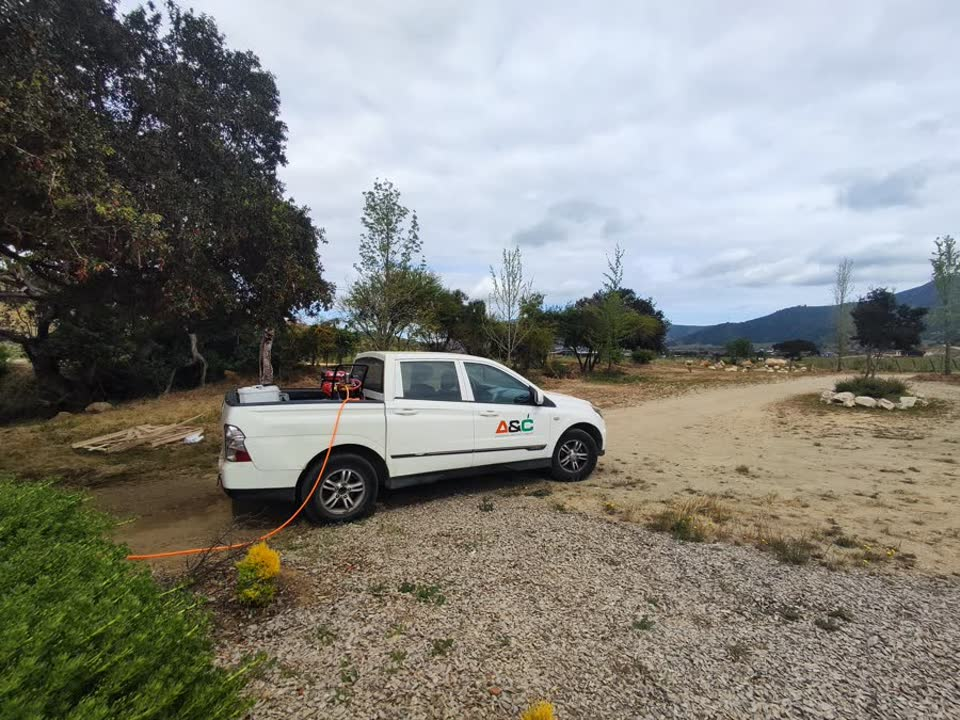

Noticias · Roedores · Salud pública
Alerta sanitaria por hantavirus: los contagios no subieron, la letalidad sí
Chile está en alerta sanitaria por hantavirus desde el 28 de julio de 2026. Este año no hubo más contagios que el anterior. Lo que cambió fue cuánta gente murió, y esa cifra también se está leyendo mal.

Los números
Hasta el 28 de julio iban 46 casos, prácticamente los mismos que en todo 2025, cuando hubo 44. Lo que cambió fue la cantidad de personas fallecidas: 18, frente a 8 del año pasado.
Eso da una letalidad del 39%, cuando el año pasado fue de un 18%. Ahí es donde se quedan casi todos los titulares. Pero mira los últimos cinco años: entre 2020 y 2024 el promedio fue 26%.
Letalidad del hantavirus en Chile
O sea, el año raro fue 2025, que estuvo bajo. Este año está alto, pero no es el doble de lo habitual.
Qué explica la diferencia
Hay tres explicaciones en estudio y ninguna está confirmada todavía:
- Que el diagnóstico esté llegando tarde.
- La condición de salud previa de cada paciente.
- Cambios en el ambiente y en el comportamiento del ratón, asociados al clima.
El MINSAL señala que el alza “podría estar asociada” a las dos primeras. Lo que sí se puede afirmar es que no hay evidencia de que el virus se haya vuelto más agresivo. Eso es distinto de que esté descartado.
Hay algo más que llama la atención: el hanta siempre fue una enfermedad asociada al verano, y este año aparecieron casos en pleno invierno. En 2026 se han registrado casos en diez regiones, entre ellas Valparaíso.
Qué es la alerta y por qué dura un año
La alerta es preventiva y no es solo por el hanta. El mismo decreto cubre tres amenazas a la vez, cada una con su territorio:
- Hantavirus
- De Atacama a Magallanes
- Zancudos del dengue
- De Arica a Los Ríos
- Influenza aviar
- Todo el país
Rige hasta el 31 de julio de 2027, un año completo. Esto no es una reacción para el pánico, es preparación: sirve para reforzar la vigilancia, contratar personal y agilizar la compra de insumos.
No necesitas ver al ratón para contagiarte
El reservorio es el ratón colilargo (Oligoryzomys longicaudatus), que está activo todo el año. Cuando orina o deja fecas, eso se seca y se hace polvo. Ese polvo queda en el aire de los lugares cerrados y tú puedes respirarlo al entrar, sin darte cuenta.
Pasa la linterna
El riesgo está en el aire
Las fecas y la orina secas del ratón se vuelven polvo, y ese polvo queda suspendido en los lugares cerrados.
Mueve el cursor o toca la imagen
El riesgo real no es cruzarte con un ratón. Es entrar a una bodega que llevaba meses cerrada.
Qué hacer
Por eso las medidas oficiales son tan concretas:
- Ventila antes de entrar. Si el lugar estuvo cerrado, ábrelo y déjalo ventilar al menos 30 minutos.
- Nunca limpies en seco. Barrer levanta justamente ese polvo. Moja con agua y cloro, y espera un rato.
- No toques roedores, ni vivos ni muertos.
- Basura tapada y comida guardada, para no darles motivos para acercarse.
Cuándo consultar: si tienes fiebre, dolor muscular intenso o dificultad para respirar después de haber estado en una zona rural, consulta y menciona el hantavirus.
Desde el control de roedores
Contra roedores, lo primero nunca es el veneno. Lo primero es cerrarles el paso: sellar por donde podrían entrar, ordenar y quitarles el refugio. El veneno recién viene después, y solo si de verdad hace falta.

Si tienes parcela, bodega o casa de campo en la Región de Valparaíso y quieres revisar por dónde pueden estar entrando, escríbenos.
Fuentes
- MINSAL. Alerta Sanitaria por hantavirus, 28 de julio de 2026: casos, fallecidos, letalidad, vigencia y cobertura.
- DIPRECE / MINSAL. Hantavirus y medidas de prevención.
- ISP. Vigilancia de hantavirus: reservorio y actividad anual.
- Emol, 28 de julio de 2026. Declaración de la alerta.
- Portal Red Salud y La Discusión. Letalidad y adelanto invernal de casos.
- El Dínamo, 11 de agosto de 2026. Letalidad del 39%.
El promedio de letalidad 2020–2024 proviene de prensa especializada. Las cifras de 2026 son al 28 de julio; el MINSAL las actualiza periódicamente.